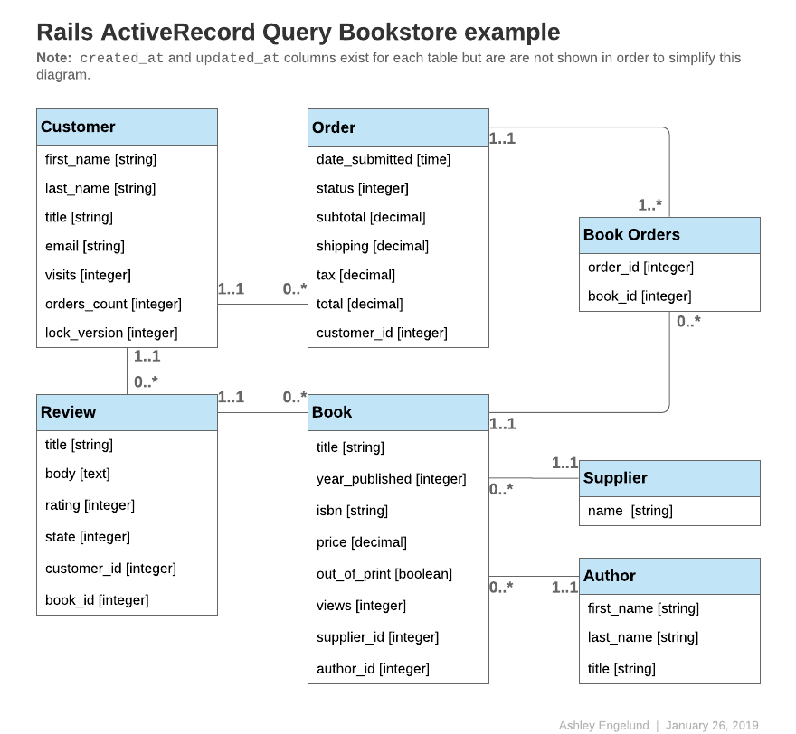

1 O que é a Interface do Active Record para Queries?
Se você está acostumado com SQL puro para encontrar registros no banco de dados, então você provavelmente encontrará maneiras melhores de realizar as mesmas operações no Rails. O Active Record te isola da necessidade de usar o SQL na maioria dos casos.
O Active Record fará consultas no banco de dados para você e é compatível com a maioria dos sistemas de banco de dados, incluindo MySQL, MariaDB, PostgreSQL e SQLite. Independentemente de qual sistema de banco de dados você está usando, o formato dos métodos do Active Record será sempre o mesmo.
Os exemplos de código ao longo desse guia irão se referir à um ou mais dos seguintes modelos:
Todos os models seguintes utilizam id como primary key (chave primária), a não ser quando especificado o
contrário.
class Author < ApplicationRecord
has_many :books, -> { order(year_published: :desc) }
end
class Book < ApplicationRecord
belongs_to :supplier
belongs_to :author
has_many :reviews
has_and_belongs_to_many :orders, join_table: 'books_orders'
scope :in_print, -> { where(out_of_print: false) }
scope :out_of_print, -> { where(out_of_print: true) }
scope :old, -> { where(year_published: ...50.years.ago.year) }
scope :out_of_print_and_expensive, -> { out_of_print.where('price > 500') }
scope :costs_more_than, ->(amount) { where('price > ?', amount) }
end
class Customer < ApplicationRecord
has_many :orders
has_many :reviews
end
class Order < ApplicationRecord
belongs_to :customer
has_and_belongs_to_many :books, join_table: 'books_orders'
enum :status, [:shipped, :being_packed, :complete, :cancelled]
scope :created_before, ->(time) { where(created_at: ...time) }
end
class Review < ApplicationRecord
belongs_to :customer
belongs_to :book
enum :state, [:not_reviewed, :published, :hidden]
end
class Supplier < ApplicationRecord
has_many :books
has_many :authors, through: :books
end

2 Recuperando Objetos do Banco de Dados
Para recuperar objetos do banco de dados, o Active Record fornece diversos métodos de localização. Cada método de localização permite que você passe argumentos para o mesmo para executar determinada consulta no seu banco de dados sem a necessidade de escrever SQL puro.
Os métodos são:
annotatefindcreate_withdistincteager_loadextendingextract_associatedfromgrouphavingincludesjoinsleft_outer_joinslimitlocknoneoffsetoptimizer_hintsorderpreloadreadonlyreferencesreorderreselectreverse_orderselectwhere
Métodos de localização que retornam uma coleção, como o where e group, retornam uma instância do ActiveRecord::Relation.
Os métodos que localizam uma única entidade, como o find e o first, retornam uma única instância do model.
A principal operação do Model.find(options) pode ser resumida como:
- Converter as opções fornecidas em uma consulta equivalente no SQL.
- Disparar uma consulta SQL e recuperar os resultados correspondentes no banco de dados.
- Instanciar o objeto Ruby equivalente do model apropriado para cada linha resultante.
- Executar
after_finde, em seguida, retornos de chamada comafter_initialize, se houver.
2.1 Retornando um Único Objeto
O Active Record possui diferentes formas de retornar um único objeto.
2.1.1 find
Utilizando o método find, você pode retornar o objeto correspondente à primary key especificada que corresponde às opções fornecidas.
Por exemplo:
# Encontra o cliente com a primary key (id) 10.
irb> customer = Customer.find(10)
=> #<Customer id: 10, first_name: "Ryan">
O equivalente ao de cima, em SQL, seria:
SELECT * FROM customers WHERE (customers.id = 10) LIMIT 1
O método find irá gerar uma exceção ActiveRecord::RecordNotFound se nenhum registro correspondente for encontrado.
Você pode, também, utilizar este método para consultar múltiplos objetos. Chame o método find e passe um array de primary keys.
Será retornado um array contendo todos os registros correspondentes para as primary keys fornecidas. Por exemplo:
# Encontra os clientes com as primary keys 1 e 10.
irb> customers = Customer.find([1, 10]) # OU Customer.find(1, 10)
=> [#<Customer id: 1, first_name: "Lifo">, #<Customer id: 10, first_name: "Ryan">]
O equivalente ao de cima, em SQL, seria:
SELECT * FROM customers WHERE (customers.id IN (1,10))
O método find irá gerar uma excecão ActiveRecord::RecordNotFound a não ser que um registro correspondente seja encontrado para todas as primary keys fornecidas.
2.1.2 take
O método take retorna um registro sem nenhuma ordem implícita. Por exemplo:
irb> customer = Customer.take
=> #<Customer id: 1, first_name: "Lifo">
O equivalente ao de cima, em SQL, seria:
SELECT * FROM customers LIMIT 1
O método take retorna nil se nenhum registro for encontrado e nenhuma exceção será disparada.
Você pode passar um argumento numérico para o método take para retornar o mesmo número em resultados. Por exemplo:
irb> customers = Customer.take(2)
=> [#<Customer id: 1, first_name: "Lifo">, #<Customer id: 220, first_name: "Sara">]
O equivalente ao de cima, em SQL, seria:
SELECT * FROM customers LIMIT 2
O método take! se comporta exatamente como o take, exceto que irá gerar uma exceção ActiveRecord::RecordNotFound caso não encontre nenhum registro correspondente.
O registro retornado pode variar dependendo do mecanismo do banco de dados.
2.1.3 first
O método first encontra o primeiro registro ordenado pela primary key (padrão). Por exemplo:
irb> customer = Customer.first
=> #<Customer id: 1, first_name: "Lifo">
O equivalente ao de cima, em SQL, seria:
SELECT * FROM customers ORDER BY customers.id ASC LIMIT 1
O método first retorna nil se não for encontrado nenhum registro correspondente e nenhuma exceção é gerada.
Se o seu default scope contém um método de ordenação, first irá retornar o primeiro
registro de acordo com essa ordenação.
Você pode passar um argumento número para o métoddo first para retornar o mesmo número em resultados. Por exemplo:
irb> customers = Customer.first(3)
=> [#<Customer id: 1, first_name: "Lifo">, #<Customer id: 2, first_name: "Fifo">, #<Customer id: 3, first_name: "Filo">]
O equivalente ao de cima, em SQL, seria:
SELECT * FROM customers ORDER BY customers.id ASC LIMIT 3
Em uma coleção ordenada utilizando o order, first irá retornar o primeiro registro que foi ordenado com o atributo especificado em order.
irb> customer = Customer.order(:first_name).first
=> #<Customer id: 2, first_name: "Fifo">
O equivalente ao de cima, em SQL, seria:
SELECT * FROM customers ORDER BY customers.first_name ASC LIMIT 1
O método first! se comporta exatamente como o first, exceto que irá gerar uma exceção ActiveRecord::RecordNotFound se nenhum registro
correspondente for encontrado.
2.1.4 last
O método last encontra o último registro ordenado pela primary key (padrão). Por exemplo:
irb> customer = Customer.last
=> #<Customer id: 221, first_name: "Russel">
O equivalente ao de cima, em SQL, seria:
SELECT * FROM customers ORDER BY customers.id DESC LIMIT 1
O método last retorna nil se não encontrar nenhum registro correspondente e nenhuma exceção será disparada.
Se o seu default scope contém um método de ordenação, last irá retornar
o último registro de acordo com essa ordenação.
Você pode passar um argumento número para o método last para retornar o mesmo número em resultados. Por exemplo:
irb> customers = Customer.last(3)
=> [#<Customer id: 219, first_name: "James">, #<Customer id: 220, first_name: "Sara">, #<Customer id: 221, first_name: "Russel">]
O equivalente ao de cima, em SQL, seria:
SELECT * FROM customers ORDER BY customers.id DESC LIMIT 3
Em uma coleção ordenada utilizando o order, last irá retornar o último registro que foi ordenado com o atributo especificado em order.
irb> customer = Customer.order(:first_name).last
=> #<Customer id: 220, first_name: "Sara">
O equivalente ao de cima, em SQL, seria:
SELECT * FROM customers ORDER BY customers.first_name DESC LIMIT 1
O método last! se comporta exatamente como o last, exceto que irá gerar uma exceção ActiveRecord::RecordNotFound se nenhum registro
correspondente for encontrado.
2.1.5 find_by
O método find_by irá retornar o primeiro registro que corresponde às condições. Por exemplo:
irb> Customer.find_by first_name: 'Lifo'
=> #<Customer id: 1, first_name: "Lifo">
irb> Customer.find_by first_name: 'Jon'
=> nil
É equivalente à escrever:
Customer.where(first_name: 'Lifo').take
O equivalente ao de cima, em SQL, seria
SELECT * FROM customers WHERE (customers.first_name = 'Lifo') LIMIT 1
Observe que não há 'ORDER BY' no SQL acima. Se suas condição find_by puderem corresponder a vários registros, você deve aplicar uma ordenação para garantir um resultado determinístico.
O método find_by se comporta exatamente como o find_by, exceto que irá gerar uma exceção ActiveRecord::RecordNotFound se nenhum registro
correspondente for encontrado. Por exemplo:
irb> Customer.find_by! first_name: 'does not exist'
ActiveRecord::RecordNotFound
Isto é equivalente à escrever:
Customer.where(first_name: 'does not exist').take!
2.2 Retornando Múltiplos Objetos em Lotes
Nós frequentemente precisamos iterar sobre um grande número de registros, seja quando precisamos enviar newsletter para um grande número de clientes, ou quando vamos exportar dados.
Isso pode parecer simples:
# Isso pode consumir muita memória se a tabela for grande.
Customer.all.each do |customer|
NewsMailer.weekly(customer).deliver_now
end
Mas essa abordagem se torna cada vez mais impraticável à medida que o tamanho da tabela aumenta, pois o Customer.all.each
instrui o Active Record à buscar a tabela inteira em uma única passagem, cria um model de objeto por linha e
mantém todo o array de objetos de model na memória. De fato, se você tem um grande número de registros, a coleção inteira
pode exceder a quantidade de memória disponível.
O Rails fornece dois métodos para solucionar esse problema, dividindo os registros em lotes memory-friendly para o processamento.
O primeiro método, find_each, retorna um lote de registros e depois submete cada registro individualmente para um bloco como um model.
O segundo método, find_in_batches, retorna um lote de registros e depois submete o lote inteiro ao bloco como um array de models.
Os métodos find_each e find_in_batches são destinados ao uso no processamento em lotes de grandes numéros de registros
que não irão caber na memória de uma só vez. Se você apenas precisa fazer um loop em milhares de registros, os métodos
regulares do find são a opção preferida.
2.2.1 find_each
O método find_each retorna os registros em lotes e depois aloca cada um no bloco. No exemplo a seguir, find_each retorna
customers em lotes de 1000 e os aloca no bloco um à um:
Customer.find_each do |customer|
NewsMailer.weekly(customer).deliver_now
end
Esse processo é repetido, buscando mais lotes sempre que preciso, até que todos os registros tenham sido processados.
find_each funciona com classes de model, como visto acima, assim como relações:
Customer.where(weekly_subscriber: true).find_each do |customer|
NewsMailer.weekly(customer).deliver_now
end
contanto que ele não tenha nenhuma ordenação, pois o método necessita forçar uma ordem interna para iterar.
Se houver uma ordem presente no receptor, o comportamento depende da flag config.active_record.error_on_ignored_order.
Se verdadeiro, ArgumentError é disparada, caso contrário a ordem será ignorada e um aviso gerado, que é o padrão. Isto pode
ser substituído com a opção :error_on_ignore, explicado abaixo.
2.2.1.1 Opções para find_each
:batch_size
A opção :batch_size permite que você especifique o número de registros à serem retornados em cada lote, antes de serem passados, individualmente, para o bloco.
Por exemplo, para retornar registros de um lote de 5000:
Customer.find_each(batch_size: 5000) do |customer|
NewsMailer.weekly(customer).deliver_now
end
:start
Por padrão, os registros são buscados em ordem ascendente de primary key. A opção :start permite que você configure o primeiro ID da sequência sempre que o menor
ID não seja o que você precisa. Isto pode ser útil, por exemplo, se você quer retomar um processo interrompido de lotes, desde que você
tenha salvo o último ID processado como ponto de retorno.
Por exemplo, para enviar newsletters apenas para os clientes com a primary key começando com 2000:
Customer.find_each(start: 2000) do |customer|
NewsMailer.weekly(customer).deliver_now
end
:finish
Similar à opção :start, :finish permite que você configure o último ID da sequência sempre que o maior ID não seja o que você necessite.
Isso pode ser útil, por exemplo, se você quer executar um processo de lotes utilizando subconjuntos de registros baseados no :start e :finish
Por exemplo, para enviar newsletters apenas para os clientes com a primary key começando em 2000 e indo até 10000:
Customer.find_each(start: 2000, finish: 10000) do |customer|
NewsMailer.weekly(customer).deliver_now
end
Outro exemplo seria se você queira múltiplos workers manipulando a mesma fila de processamento. Você pode ter cada worker
lidando com 10000 registros atribuindo a opção :start e finish apropriadas para cada worker
:error_on_ignore
Sobrescreve as configurações da aplicação para especificar se um erro deve ser disparada quando a ordem está presente na relação.
:order
Specifies the primary key order (can be :asc or :desc). Defaults to :asc.
Customer.find_each(order: :desc) do |customer|
NewsMailer.weekly(customer).deliver_now
end
2.2.2 find_in_batches
O método find_in_batches é similar ao find_each, pois ambos retornam lotes de registros. A diferença é que o find_in_batches fornece lotes ao bloco como um array de models,
em vez de individualmente. O exemplo à seguir irá produzir ao bloco fornecido um array com até 1000 notas fiscais de uma vez,
com o bloco final contendo quaisquer clientes remanescente:
# Fornece à add_customers um array com 1000 clientes de cada vez.
Customer.find_in_batches do |customers|
export.add_customers(customers)
end
find_in_batches funcional com classes de model, como visto acima, e também com relações:
# Fornece à add_customers um array dos 1000 clientes ativos recentemente de cada vez.
Customer.recently_active.find_in_batches do |customers|
export.add_customers(customers)
end
contanto que não há ordenação, pois o método irá forçar uma ordem interna para a iteração.
2.2.2.1 Opções parafind_in_batches
O método find_in_batches aceita as mesmas opção que o find_each:
:batch_size
Assim como para find_each, batch_size estabelece quantos registros serão recuperados em cada grupo. Por exemplo, a recuperação de lotes de 2500 registros pode ser especificada como:
Customer.find_in_batches(batch_size: 2500) do |customers|
export.add_customers(customers)
end
:start
A opção start permite especificar o ID inicial de onde os registros serão selecionados. Conforme mencionado antes, por padrão, os registros são buscados em ordem crescente da chave primária. Por exemplo, para recuperar clientes começando com ID: 5000 em lotes de 2500 registros, o seguinte código pode ser usado:
Customer.find_in_batches(batch_size: 2500, start: 5000) do |customers|
export.add_customers(customers)
end
:finish
A opção finish permite especificar a identificação final dos registros a serem recuperados. O código abaixo mostra o caso de recuperação de clientes em lotes, até o cliente com ID: 7000:
Customer.find_in_batches(finish: 7000) do |customers|
export.add_customers(customers)
end
:error_on_ignore
A opção error_on_ignore sobrescreve a configuração da aplicação para especificar se um erro deve ser disparado quando uma ordem específica está presente na relação.
3 Condições
O método where permite que você especifique condições para limitar os registros retornados, representando a parte where da instrução SQL. Condições podem ser especificadas como uma string, array, ou hash.
3.1 Condições de Strings Puras
Se você gostaria de adicionar condições para sua busca, poderia apenas especificá-las, como, por exemplo Book.where("title = 'Introdução a Algoritmos'"). Isso encontrará todos os livros em que o campo title tenha o valor igual a "Introdução a Algoritmos".
Construindo sua própria condições como strings pura pode te deixar vulnerável a ataques de injeção SQL. Por exemplo, Book.where("title LIKE '%#{params[:title]}%'") não é seguro. Veja a próxima seção para saber a maneira preferida de lidar com condições usando array.
3.2 Condições de Array
Agora, se esse título pudesse variar, digamos como um argumento de algum lugar? O comando da busca então levaria a forma:
Book.where("title = ?", params[:title])
Active Record tomará o primeiro argumento como a string de condições e quaisquer argumentos adicionais vão substituir os pontos de interrogação (?) nele.
Se você quer especificar múltiplas condições:
Book.where("title = ? AND out_of_print = ?", params[:title], false)
Neste exemplo, o primeiro ponto de interrogação será substituído com o valor em params[:title] e o segundo será substituído com a representação SQL para false, que depende do adaptador.
Este código é altamente preferível:
Book.where("title = ?", params[:title])
Para este código:
Book.where("title = #{params[:title]}")
Devido à segurança do argumento. Colocando a variável dentro da condição de string, passará a variável para o banco de dados como se encontra. Isto significa que será uma variável sem escape diretamente de um usuário que pode ter intenções maliciosas. Se você fizer isso, coloca todo seu banco de dados em risco, porque uma vez que um usuário descobre que pode explorar seu banco de dados, ele pode fazer qualquer coisa com ele. Nunca, jamais, coloque seus argumentos diretamente dentro da condição de string.
Para mais informações sobre os perigos da injeção de SQL, veja em Ruby on Rails Security Guide / Ruby on Rails Security Guide PT-Br
3.2.1 Condições com Placeholder
Similar ao estilo de substituição (?) dos parâmetros, você também pode especificar chaves em sua condição de string junto com uma hash de chaves/valores (keys/values) correspondentes:
Book.where("created_at >= :start_date AND created_at <= :end_date",
{start_date: params[:start_date], end_date: params[:end_date]})
Isso torna a legibilidade mais clara se você tem um grande número de condições variáveis.
3.2.2 Condições que usam LIKE
Embora os argumentos de condição sejam automaticamente escapados para evitar injeção de SQL (SQL injection), os curingas SQL LIKE (ou seja, % e _) não são escapados. Isso pode causar um comportamento inesperado se um valor não limpo for usado em um argumento. Por exemplo:
Book.where("title LIKE ?", params[:title] + "%")
No código acima, a intenção é corresponder títulos que começam com uma string especificada pelo usuário. No entanto, quaisquer ocorrências de % ou _ em params[:title] serão tratadas como curingas, levando a resultados de consulta surpreendentes. Em algumas circunstâncias, isso também pode impedir que o banco de dados use um índice pretendido, levando a uma consulta muito mais lenta.
Para evitar esses problemas, use sanitize_sql_like para escapar caracteres curinga na parte relevante do argumento:
Book.where("title LIKE ?",
Book.sanitize_sql_like(params[:title]) + "%")
3.3 Condições de Hash
Active Record também permite que você passe em condições de hash o que pode aumentar a legibilidade de suas sintaxes de condições. Com condições de hash, você passa em uma hash com chaves (keys) dos campos que deseja qualificados e os valores (values) de como deseja qualificá-los:
Apenas igualdade, intervalo, e subconjunto são possíveis com as condições de hash.
3.3.1 Condições de igualdade
Book.where(out_of_print: true)
Isso irá gerar um SQL como este:
SELECT * FROM books WHERE (books.out_of_print = 1)
O nome do campo também pode ser uma string:
Book.where('out_of_print' => true)
No caso de um relacionamento belongs_to, uma chave de associação pode ser usada para especificar o model se um objeto Active Record for usado como o valor. Este método também funciona com relacionamentos polimórficos.
author = Author.first
Book.where(author: author)
Author.joins(:books).where(books: { author: author })
3.3.2 Condições de intervalos
Book.where(created_at: (Time.now.midnight - 1.day)..Time.now.midnight)
Isso irá encontrar todos livros criados ontem usando uma instrução SQL BETWEEN:
SELECT * FROM books WHERE (books.created_at BETWEEN '2008-12-21 00:00:00' AND '2008-12-22 00:00:00')
Isso demonstra uma sintaxe mais curta para exemplos em Condições de Array
Beginless and endless ranges are supported and can be used to build less/greater than conditions.
Book.where(created_at: (Time.now.midnight - 1.day)..)
This would generate SQL like:
SELECT * FROM books WHERE books.created_at >= '2008-12-21 00:00:00'
3.3.3 Subconjunto de Condições
Se você deseja procurar registros usando a expressão IN pode passar um array para a hash de condições:
Customer.where(orders_count: [1,3,5])
Esse código irá gerar um SQL como este:
SELECT * FROM customers WHERE (customers.orders_count IN (1,3,5))
3.4 Condições NOT
Consultas SQL NOT podem ser construídas por where.not:
Customer.where.not(orders_count: [1,3,5])
Em outras palavras, essa consulta pode ser gerada chamando where sem nenhum argumento, então imediatamente encadeie com condições not passando where. Isso irá gerar SQL como este:
SELECT * FROM customers WHERE (customers.orders_count NOT IN (1,3,5))
Se uma consulta tiver uma condição usando hash com valores não nulos em uma coluna anulável, os registros que tiverem valores nil na coluna anulável não serão retornados. Por exemplo:
Customer.create!(nullable_contry: nil)
Customer.where.not(nullable_country: "UK")
=> []
# Mas
Customer.create!(nullable_contry: "UK")
Customer.where.not(nullable_country: nil)
=> [#<Customer id: 2, nullable_contry: "UK">]
3.5 Condições OR
Condições OR entre duas relações podem ser construídas chamando or na primeira relação, e passando o segundo como um argumento.
Customer.where(last_name: 'Smith').or(Customer.where(orders_count: [1,3,5]))
SELECT * FROM customers WHERE (customers.last_name = 'Smith' OR customers.orders_count IN (1,3,5))
3.6 Condições AND
Condições AND podem ser construídas encadeando condições where.
Customer.where(last_name: 'Smith').where(orders_count: [1,3,5]))
SELECT * FROM customers WHERE customers.last_name = 'Smith' AND customers.orders_count IN (1,3,5)
Condições AND para a interseção lógica entre as relações podem ser construídas
chamando and na primeira relação e passando a segunda como um
argumento.
Customer.where(id: [1, 2]).and(Customer.where(id: [2, 3]))
SELECT * FROM customers WHERE (customers.id IN (1, 2) AND customers.id IN (2, 3))
4 Ordenando
Para recuperar registros do banco de dados em uma ordem específica, você pode usar o método de order.
Por exemplo, se você deseja obter um conjunto de registros e ordená-los em ordem crescente pelo campo created_at na sua tabela:
Book.order(:created_at)
# OU
Book.order("created_at")
Você também pode especificar ASC ouDESC:
Book.order(created_at: :desc)
# OU
Book.order(created_at: :asc)
# OU
Book.order("created_at DESC")
# OU
Book.order("created_at ASC")
Ou ordenar por campos diversos:
Book.order(title: :asc, created_at: :desc)
# OU
Book.order(:title, created_at: :desc)
# OU
Book.order("title ASC, created_at DESC")
# OU
Book.order("title ASC", "created_at DESC")
Se você quiser chamar order várias vezes, as ordens subsequentes serão anexados à primeira:
irb> Book.order("title ASC").order("created_at DESC")
SELECT * FROM books ORDER BY title ASC, created_at DESC
Na maioria dos sistemas de banco de dados, ao selecionar campos com distinct de um conjunto de resultados usando métodos comoselect, pluck e ids; o método order gerará uma exceção ActiveRecord::StatementInvalid, a menos que o(s) campo(s) usados na cláusula order estejam incluídos na lista de seleção. Consulte a próxima seção para selecionar campos do conjunto de resultados.
5 Selecionando Campos Específicos
Por padrão, Model.find seleciona todos os campos do conjunto de resultado usando select *.
Para selecionar somente um subconjunto de campos do conjunto de resultado, você pode especificar o
subconjunto via método select.
Por exemplo, para selecionar somente as colunas isbn e out_of_print:
Book.select(:isbn, :out_of_print)
# OU
Book.select("isbn, out_of_print")
A query SQL usada por esta chamada de busca vai ser algo como:
SELECT isbn, out_of_print FROM books
Tome cuidado pois isso também significa que você está inicializando um objeto model com somente os campos que você selecionou. Se você tentar acessar um campo que não está no registro inicializado, você vai receber:
ActiveModel::MissingAttributeError: missing attribute: <attribute>
Onde <attribute> é o atributo que você pediu. O método id não vai lançar o ActiveRecord::MissingAttributeError, então fique atento quando estiver trabalhando com associações, pois elas precisam do método id para funcionar corretamente.
Se você quiser pegar somente um registro por valor único em um certo campo, você pode usar distinct:
Customer.select(:last_name).distinct
Isso vai gerar uma query SQL como:
SELECT DISTINCT last_name FROM customers
Você pode também remover a restrição de unicidade:
# Retorna último nome únicos
query = Customer.select(:last_name).distinct
# Retorna todos os últimos nomes, mesmo se houverem valores duplicados.
query.distinct(false)
6 Limit e Offset
Para aplicar LIMIT ao SQL disparado pelo método Model.find, você pode especificar o LIMIT usando os métodos limit e offset na relação.
Você pode utilizar limit para especificar o número de registros para buscar, e usar offset para especificar o número de registros para pular antes de retornar os registros. Por exemplo
Customer.limit(5)
retornará no máximo 5 clientes e devido ao método não especificar nenhum offset ele retornará os primeiros 5 registros na tabela. O SQL que o método executa será parecido com:
SELECT * FROM customers LIMIT 5
Ao adicionar offset
Customer.limit(5).offset(30)
a chamada retornará no lugar um máximo de 5 clientes iniciando com o trigésimo-primeiro. O SQL será parecido com:
SELECT * FROM customers LIMIT 5 OFFSET 30
7 Agrupando
Para aplicar uma cláusula GROUP BY para o SQL disparado pelo localizador, você pode utilizar o método group.
Por exemplo, se você quer encontrar uma coleção das datas em que os pedidos foram criados:
Order.select("created_at").group("created_at")
E isso te dará um único objeto Order para cada data em que há pedidos no banco de dados.
O SQL que será executado parecerá com algo como isso:
SELECT created_at
FROM orders
GROUP BY created_at
7.1 Total de Itens Agrupados
Para pegar o total de itens agrupados em uma única query, chame count depois do group.
irb> Order.group(:status).count
=> {"being_packed"=>7, "shipped"=>12}
O SQL que será executado parecerá com algo como isso:
SELECT COUNT (*) AS count_all, status AS status
FROM orders
GROUP BY status
8 Having
O SQL usa a cláusula HAVING para especificar condições nos campos GROUP BY. Você pode adicionar a cláusula HAVING ao SQL disparado pelo Model.find ao adicionar o método having à busca.
Por exemplo:
Order.select("created_at, sum(total) as total_price").
group("created_at").having("sum(total) > ?", 200)
O SQL que será executado será parecido com isso:
SELECT created_at as ordered_date, sum(total) as total_price
FROM orders
GROUP BY created_at
HAVING sum(total) > 200
Isso retorna a data e o preço total para cada objeto de pedido, agrupado pelo dia em que foram criados e se o preço é maior que $200.
Se você quiser acessar o total_price para cada objeto order retornado pode fazer assim:
big_orders = Order.select("created_at, sum(total) as total_price")
.group("created_at")
.having("sum(total) > ?", 200)
big_orders[0].total_price
# Retorna o preço total para o primeiro objeto Order
9 Condições de Substituição
9.1 unscope
Você pode especificar certas condições a serem removidas usando o método unscope. Por exemplo:
Book.where('id > 100').limit(20).order('id desc').unscope(:order)
O SQL que será executado:
SELECT * FROM books WHERE id > 100 LIMIT 20
-- Query original sem `unscope`
SELECT * FROM books WHERE id > 100 ORDER BY id desc LIMIT 20
Você também pode remover o escopo de cláusulas where específicas. Por exemplo, isto irá remover a condição do id da cláusula de where:
Book.where(id: 10, out_of_print: false).unscope(where: :id)
# SELECT books.* FROM books WHERE out_of_print = 0
A relação que usou unscope afetará quaisquer relações nas quais foi unida:
Book.order('id desc').merge(Book.unscope(:order))
# SELECT books.* FROM books
9.2 only
Você também pode substituir condições com o método only. Por exemplo:
Book.where('id > 10').limit(20).order('id desc').only(:order, :where)
O SQL que será executado:
SELECT * FROM books WHERE id > 10 ORDER BY id DESC
-- Query original sem o `only`
SELECT * FROM books WHERE id > 10 ORDER BY id DESC LIMIT 20
9.3 reselect
O método reselect substitui uma declaração de select existente. Por exemplo:
Book.select(:title, :isbn).reselect(:created_at)
O SQL que será executado:
SELECT books.created_at FROM books
Compare com uma cláusula em que o reselect não é utilizado:
Book.select(:title, :isbn).select(:created_at)
o SQL executado será:
SELECT books.title, books.isbn, books.created_at FROM books
9.4 reorder
O método reorder substitui a ordem de escopo padrão. Por exemplo:
class Author < ApplicationRecord
has_many :books, -> { order(year_published: :desc) }
end
E você executa assim:
Author.find(10).books
O SQL que será executado:
SELECT * FROM authors WHERE id = 10 LIMIT 1
SELECT * FROM books WHERE author_id = 10 ORDER BY year_published DESC
Você pode usar o método reorder para especificar um jeito diferente de ordenar os livros:
Author.find(10).books.reorder('year_published ASC')
O SQL que será executado:
SELECT * FROM authors WHERE id = 10 LIMIT 1
SELECT * FROM books WHERE author_id = 10 ORDER BY year_published ASC
9.5 reverse_order
O método reverse_order reverte a ordem da cláusula, se especificado.
Book.where("author_id > 10").order(:year_published).reverse_order
O SQL que será executado:
SELECT * FROM books WHERE author_id > 10 ORDER BY year_published DESC
Se nenhuma cláusula de ordenação é especificada na query, o reverse_order ordena pela chave primária em ordem reversa.
Book.where("author_id > 10").reverse_order
O SQL que será executado:
SELECT * FROM books WHERE author_id > 10 ORDER BY books.id DESC
O método reverse_order não aceita argumentos.
9.6 rewhere
O método rewhere substitui uma existente, nomeada condição de where. Por exemplo:
Book.where(out_of_print: true).rewhere(out_of_print: false)
O SQL que será executado:
SELECT * FROM books WHERE out_of_print = 0
Se a cláusula rewhere não for utilizada, as cláusulas where são juntadas usando AND:
Book.where(out_of_print: true).where(out_of_print: false)
o SQL será:
SELECT * FROM books WHERE out_of_print = 1 AND out_of_print = 0
10 Relações Nulas
O método none retorna uma relação encadeada sem registros. Quaisquer condições subsequentes encadeadas à relação retornada continuarão gerando relações vazias. Isso é útil em cenários onde você precisa de uma resposta encadeada para um método ou um escopo que pode retornar zero resultados.
Book.none # retorna uma Relation vazia e não dispara nenhuma query.
# O método highlighted_review abaixo deve sempre retornar uma Relation.
Book.first.highlighted_reviews.average(:rating)
# => Retorna a média de avaliações dos livros
class Book
# Retorna avaliações se forem pelo menos 5,
# senão considere o livros como não avaliado
def highlighted_reviews
if reviews.count > 5
reviews
else
Review.none # Não atingiu o número mínimo de avaliações ainda
end
end
end
11 Objetos Readonly (Somente leitura)
O Active Record provê o método readonly em uma relação para desabilitar modificações explicitamente em qualquer um dos objetos retornados. Qualquer tentativa de alterar um registro readonly não ocorrerá, disparando uma exceção ActiveRecord::ReadOnlyRecord.
customer = Customer.readonly.first
customer.visits += 1
customer.save
Como customer é explicitamente configurado para ser um objeto readonly, o código acima disparando uma exceção ActiveRecord::ReadOnlyRecord ao chamar client.save com o valor atualizado de visits.
12 Bloqueando registros para alteração
O bloqueio é útil para prevenir condições de corrida ao alterar registros no banco de dados e para garantir alterações atômicas.
O Active Record provê dois mecanismos de bloqueio:
- Bloqueio otimista
- Bloqueio pessimista
12.1 Bloqueio Otimista
O bloqueio otimista permite que múltiplos usuários acessem o mesmo registro para edição e presume um mínimo de conflitos com os dados. Isto é feito verificando se outro processo fez mudanças em um registro desde que ele foi aberto. Uma exceção ActiveRecord::StaleObjectError é disparada se isso ocorreu e a alteração é ignorada.
Coluna de bloqueio otimista
Para usar o bloqueio otimista, a tabela precisa ter uma coluna chamada lock_version do tipo inteiro. Cada vez que o registro é alterado, o Active Record incrementa o valor na coluna lock_version. Se uma requisição de alteração é feita com um valor menor no campo lock_version do que o valor que está atualmente na coluna lock_version no banco de dados, a requisição de alteração falhará com um ActiveRecord::StaleObjectError.
Por exemplo:
c1 = Customer.find(1)
c2 = Customer.find(1)
c1.first_name = "Sandra"
c1.save
c2.first_name = "Michael"
c2.save # Dispara um ActiveRecord::StaleObjectError
Você fica então responsável por lidar com o conflito tratando a exceção e desfazendo as alterações, agrupando-as ou aplicando a lógica de negócio necessária para resolver o conflito.
Este comportamento pode ser desativado definindo ActiveRecord::Base.lock_optimistically = false.
Para usar outro nome para a coluna lock_version, ActiveRecord::Base oferece um atributo de classe chamado locking_column:
class Customer < ApplicationRecord
self.locking_column = :lock_customer_column
end
12.2 Bloqueio pessimista
O bloqueio pessimista usa um mecansimo de bloqueio fornecido pelo banco de dados subjacente. Ao usar lock quando uma relation (objeto do tipo ActiveRecord::Relation) é criada, obtém-se um bloqueio exclusivo nas linhas selecionadas. Relations usando lock são normalmente executadas dentro de uma transação para permitir condições de deadlock.
Por exemplo:
Book.transaction do
book = Book.lock.first
book.title = 'Algorithms, second edition'
book.save!
end
A sessão acima produz o seguinte SQL para um banco de dados MySQL:
SQL (0.2ms) BEGIN
Book Load (0.3ms) SELECT * FROM books LIMIT 1 FOR UPDATE
Book Update (0.4ms) UPDATE books SET updated_at = '2009-02-07 18:05:56', title = 'Algorithms, second edition' WHERE id = 1
SQL (0.8ms) COMMIT
Você também pode passar SQL diretamente para o método lock para permitir diferentes tipos de bloqueio. Por exemplo, MySQL tem uma expressão chamada LOCK IN SHARE MODE que permite bloquear um registro mas ainda assim permitir que outras consultas o leiam. Para especificar esta expressão, basta passá-la ao método lock:
Book.transaction do
book = Book.lock("LOCK IN SHARE MODE").find(1)
book.increment!(:views)
end
Observe que seu banco de dados deve suportar o SQL puro, que você irá passar para o método lock.
Se você já tem uma instância do seu modelo, você pode iniciar uma transação e obter o bloqueio de uma vez só usando o código seguinte:
book = Book.first
book.with_lock do
# Este bloco é chamado dentro de uma transação,
# o livro já está bloqueado.
book.increment!(:views)
end
13 Associando Tabelas
O Active Record fornece dois métodos de busca para especificar cláusulas JOIN no SQL resultante: joins e left_outer_joins.
Enquanto joins deve ser utilizado para INNER JOIN em consultas personalizadas,
left_outer_joins é usado para consultas usando LEFT OUTER JOIN.
13.1 joins
Há múltiplas maneiras de usar o método joins.
13.1.1 Usando um Fragmento de String SQL
Você pode apenas fornecer o SQL literal especificando a cláusula JOIN para joins:
Author.joins("INNER JOIN books ON books.author_id = authors.id AND books.out_of_print = FALSE")
Isso resultará no seguinte SQL:
SELECT authors.* FROM authors INNER JOIN books ON books.author_id = authors.id AND books.out_of_print = FALSE
13.1.2 Usando Array/Hash de Associações Nomeadas
O Active Record permite que você use os nomes de associações definidos no model como um atalho para especificar cláusulas JOIN para essas associações quando estiver usando o método joins.
Todas as seguintes irão produzir uma query com join usando INNER JOIN:
13.1.2.1 Unindo uma Associação Única
Book.joins(:reviews)
Isso produz:
SELECT books.* FROM books
INNER JOIN reviews ON reviews.book_id = books.id
Ou, em Português: "retorne um objeto Book para todos os livros com avalições". Observe que você verá livros duplicados se um livro tiver mais de uma avalição. Se você quiser livros únicos, pode usar Book.joins(:reviews).distinct.
13.1.3 Unindo Múltiplas Associações
Book.joins(:author, :reviews)
Isso produz:
SELECT books.* FROM books
INNER JOIN reviews ON reviews.book_id = books.id
INNER JOIN customers ON customers.id = reviews.customer_id
Ou, em Português: "retorne todos os livros que o seu autor tem no mínimo uma avalição". Observe novamente que livros com múltiplas avalições aparecerão múltiplas vezes.
13.1.3.1 Unindo Associações Aninhadas (Nível Único)
Book.joins(reviews: :customer)
Isso produz:
SELECT books.* FROM books
INNER JOIN reviews ON reviews.book_id = book.id
INNER JOIN customer ON customers.id = reviews.id
Ou, em Português: "retorne todos os livros que tem avaliações de um cliente".
13.1.3.2 Unindo Associações Aninhadas (Níveis Múltiplos)
Author.joins(books: [{ reviews: { customer: :orders } }, :supplier] )
Isso produz:
SELECT * FROM authors
INNER JOIN books ON books.author_id = authors.id
INNER JOIN reviews ON reviews.book_id = books.id
INNER JOIN customers ON customers.id = reviews.customer_id
INNER JOIN orders ON orders.customer_id = customers.id
INNER JOIN suppliers ON suppliers.id = books.supplier_id
Ou, em Português: "retorne todas os autores que têm livros com avalições e tem pedidos de clientes, e com fornecedores para esses livros."
13.1.4 Especificando Condições em Tabelas Associadas
Você pode especificar condições nas tabelas associadas com condições Array e String. Hash conditions fornecem uma sintaxe especial para especificar condições para as tabelas associadas:
time_range = (Time.now.midnight - 1.day)..Time.now.midnight
Customer.joins(:orders).where('orders.created_at' => time_range).distinct
Isso encontrará todos os clientes que têm pedidos criados ontem, usando uma expressão SQL BETWEEN para comparar created_at.
Uma sintaxe alternativa e mais limpa é aninhar as condições de hash:
time_range = (Time.now.midnight - 1.day)..Time.now.midnight
Customer.joins(:orders).where(orders: { created_at: time_range }).distinct
Para condições mais avançadas ou para reutilizar um escopo nomeado existente, merge pode ser usado. Primeiro, vamos adicionar um novo escopo nomeado ao modelo Order:
class Order < ApplicationRecord
belongs_to :customer
scope :created_in_time_range, ->(time_range) {
where(created_at: time_range)
}
end
Agora nós podemos usar merge para juntar o escopo created_in_time_range:
time_range = (Time.now.midnight - 1.day)..Time.now.midnight
Customer.joins(:orders).merge(Order.created_in_time_range(time_range)).distinct
Isso encontrará todos os clientes que têm pedidos criados ontem, novamente usando uma expressão SQL BETWEEN.
13.2 left_outer_joins
Se você deseja selecionar um conjunto de registros tendo ou não registros associados, você pode usar o método left_outer_joins.
Customer.left_outer_joins(:reviews).distinct.select('customers.*, COUNT(reviews.*) AS reviews_count').group('customers.id')
Que resulta em:
SELECT DISTINCT customers.*, COUNT(reviews.*) AS reviews_count FROM customers
LEFT OUTER JOIN reviews ON reviews.customer_id = customers.id GROUP BY customers.id
Que significa: "retorne todos os clientes com suas contagens de avaliações, tenham eles avaliações ou não"
14 Associations com Eager Loading
O eager loading rápido é o mecanismo para carregar os registros associados dos objetos retornados por Model.find usando o mínimo de consultas possível.
Problema de consultas N + 1
Considere o seguinte código, que encontra 10 livros e imprime o último nome de seus autores:
books = Book.limit(10)
books.each do |book|
puts book.author.last_name
end
Este código parece bom à primeira vista. Mas o problema está no número total de consultas executadas. O código acima executa 1 (para encontrar 10 livros) + 10 (um para cada livro para carregar o autor) = 11 consultas no total.
Solução para problemas de consultas N + 1
o Active Record permite que você especifique com antecedência todas as associações que serão carregadas. Isso é possível especificando o método includes da chamada Model.find. Com o includes, o Active Record garante que todas as associações especificadas sejam carregadas usando o número mínimo possível de consultas.
Os métodos são:
14.1 includes
Com includes, o Active Record garante que todas as associações especificadas sejam carregadas usando o número mínimo possível de consultas.
Revisitando o caso acima, usando o método includes, poderíamos reescrever Book.limit(10) para carregamento antecipado dos autores:
books = Book.includes(:author).limit(10)
books.each do |book|
puts book.author.last_name
end
O código acima executará apenas 2 consultas, em oposição às 11 consultas do caso original:
SELECT books.* FROM books LIMIT 10
SELECT authors.* FROM authors
WHERE authors.book_id IN (1,2,3,4,5,6,7,8,9,10)
14.1.1 Eager Loading Multiple Associations
O Active Record permite que você carregue rapidamente qualquer número de associações com uma única chamada Model.find usando um array, hash, ou um hash aninhado de array / hash com o método includes.
14.1.2 Array de Associações Múltiplas
Customer.includes(:orders, :reviews)
Isso carrega todos os clientes e os pedidos e avaliações associados.
14.1.2.1 Hash de Associações Aninhadas
Customer.includes(orders: {books: [:supplier, :author]}).find(1)
Isso encontrará a cliente com id 1 e carregará antecipadamente todos os pedidos associados, os livros para aqueles pedidos e autores e fornecedores para cada um dos livros.
14.1.3 Especificando Condições em Associações Eager Loaded
Mesmo que o Active Record permita que você especifique as condições nas associações carregadas antecipadamente como joins, a maneira recomendada é usar joins ao invés.
No entanto, se você deve fazer isso, você pode usar where como faria normalmente.
Author.includes(:books).where(books: { out_of_print: true })
Isso geraria uma consulta que contém um LEFT OUTER JOIN enquanto o
O método joins geraria um usando a função INNER JOIN.
SELECT authors.id AS t0_r0, ... books.updated_at AS t1_r5 FROM authors LEFT OUTER JOIN books ON books.author_id = authors.id WHERE (books.out_of_print = 1)
Se não houvesse uma condição where, isso geraria o conjunto normal de duas consultas.
NOTA: Usar where assim só funcionará quando você passar um Hash. Para
Fragmentos de SQL você precisa usar references para forçar tabelas unidas:
Author.includes(:books).where("books.out_of_print = true").references(:books)
Se, no caso desta consulta includes, não houver livros para qualquer
autor, todos os autores ainda seriam carregados. Usando joins (um INNER
JOIN), as condições de junção devem corresponder, caso contrário, nenhum registro será
devolvido.
Se uma associação for carregada antecipadamente como parte de uma junção, quaisquer campos de uma cláusula de seleção personalizada não estarão presentes nos models carregados. Isso ocorre porque é ambíguo se eles devem aparecer no registro do pai ou do filho.
14.2 preload
Com preload, o Active Record carrega usando uma consulta para cada associação especificada.
Revisitando o problema com consultas N + 1, poderíamos reescrever Book.limit(10) usar preload para autores:
books = Book.preload(:author).limit(10)
books.each do |book|
puts book.author.last_name
end
O código acima executará apenas 2 consultas, ao contrário de 11 consultas no caso original:
SELECT books.* FROM books LIMIT 10
SELECT authors.* FROM authors
WHERE authors.book_id IN (1,2,3,4,5,6,7,8,9,10)
O método preload usa um array, hash ou um hash aninhado de array/hash da mesma forma que o método includes para carregar qualquer número de associações com uma única chamada Model.find. No entanto, ao contrário do método includes, não é possível especificar condições para associações carregadas antecipadamente (preload).
14.3 eager_load
Com eager_load, o Active Record garante que force o carregamento antecipado usando LEFT OUTER JOIN.
Revisitando o caso em que N + 1 ocorreu usando o método eager_load, poderíamos reescrever Book.limit(10) para autores:
books = Book.eager_load(:author).limit(10)
books.each do |book|
puts book.author.last_name
end
O código acima executará apenas 2 consultas, ao contrário de 11 consultas no caso original:
SELECT DISTINCT books.id FROM books LEFT OUTER JOIN authors ON authors.book_id = books.id LIMIT 10
SELECT books.id AS t0_r0, books.last_name AS t0_r1, ...
FROM books LEFT OUTER JOIN authors ON authors.book_id = books.id
WHERE books.id IN (1,2,3,4,5,6,7,8,9,10)
O método eager_load usa um array, hash ou um hash aninhado de array/hash da mesma forma que o método includes para carregar qualquer número de associações com uma única chamada Model.find. Além disso, como o método includes, você pode especificar as condições da associação carregada antecipadamente.
15 Scopes
A definição do escopo permite que você especifique consultas comumente usadas, que podem ser referenciadas como chamadas de método nos objetos ou modelos associados. Com esses escopos, você pode usar todos os métodos cobertos anteriormente, como where, joins e includes. Todos os corpos de escopo devem retornar um ActiveRecord::Relation ou nil para permitir que métodos adicionais (como outros escopos) sejam chamados nele.
Para definir um escopo simples, usamos o método scope dentro da classe, passando a consulta que gostaríamos de executar quando este escopo for chamado:
class Book < ApplicationRecord
scope :out_of_print, -> { where(out_of_print: true) }
end
Para chamar este escopo out_of_print nós podemos chama-lo tanto na classe:
irb> Book.out_of_print
=> #<ActiveRecord::Relation> # todos os livros sem tiragem
Ou numa associação consistida de objetos Book:
irb> author = Author.first
irb> author.books.out_of_print
=> #<ActiveRecord::Relation> # todos os livros sem tiragem por autor
Os escopos também podem ser encadeados dentro dos escopos:
class Book < ApplicationRecord
scope :out_of_print, -> { where(out_of_print: true) }
scope :out_of_print_and_expensive, -> { out_of_print.where("price > 500") }
end
15.1 Transmitindo Argumentos
Seu escopo pode receber argumentos:
class Book < ApplicationRecord
scope :costs_more_than, ->(amount) { where("price > ?", amount) }
end
Chame o escopo como se fosse um método de classe:
irb> Book.costs_more_than(100.10)
No entanto, isso é apenas a duplicação da funcionalidade que seria fornecida a você por um método de classe.
class Book < ApplicationRecord
def self.costs_more_than(amount)
where("price > ?", amount)
end
end
Esses métodos ainda estarão acessíveis nos objetos de associação:
irb> author.books.costs_more_than(100.10)
15.2 Usando Condicionais
Seu escopo pode utilizar condicionais:
class Order < ApplicationRecord
scope :created_before, ->(time) { where(created_at: ...time) if time.present? }
end
Como os outros exemplos, isso se comportará de maneira semelhante a um método de classe.
class Order < ApplicationRecord
def self.created_before(time)
where(created_at: ...time) if time.present?
end
end
No entanto, há uma advertência importante: um escopo sempre retornará um objeto ActiveRecord::Relation, mesmo se a condicional for avaliada como false, enquanto um método de classe retornará nil. Isso pode causar NoMethodError ao encadear métodos de classe com condicionais, se qualquer uma das condicionais retornar false.
15.3 Aplicando um Escopo Padrão
Se desejarmos que um escopo seja aplicado em todas as consultas do model, podemos usar o
método default_scope dentro do próprio model.
class Book < ApplicationRecord
default_scope { where(out_of_print: false) }
end
Quando as consultas são executadas neste model, a consulta SQL agora será semelhante a isto:
SELECT * FROM books WHERE (out_of_print = false)
Se você precisa fazer coisas mais complexas com um escopo padrão, você pode alternativamente defini-lo como um método de classe:
class Book < ApplicationRecord
def self.default_scope
# Deve retornar uma ActiveRecord::Relation.
end
end
O default_scope também é aplicado ao criar/construir um registro
quando os argumentos do escopo são fornecidos como Hash. Não é aplicado enquanto
atualizando um registro. E.g.:
class Book < ApplicationRecord
default_scope { where(out_of_print: false) }
end
irb> Book.new
=> #<Book id: nil, out_of_print: false>
irb> Book.unscoped.new
=> #<Book id: nil, out_of_print: nil>
Esteja ciente de que, quando fornecido no formato Array, os argumentos de consulta default_scope
não pode ser convertido em Hash para atribuição de atributo padrão. E.g.:
class Book < ApplicationRecord
default_scope { where("out_of_print = ?", false) }
end
irb> Book.new
=> #<Book id: nil, out_of_print: nil>
15.4 Mesclagem de Escopos
Assim como os escopos das cláusulas where são mesclados usando as condições AND.
class Book < ApplicationRecord
scope :in_print, -> { where(out_of_print: false) }
scope :out_of_print, -> { where(out_of_print: true) }
scope :recent, -> { where(year_published: 50.years.ago.year..) }
scope :old, -> { where(year_published: ...50.years.ago.year) }
end
irb> Book.out_of_print.old
SELECT books.* FROM books WHERE books.out_of_print = 'true' AND books.year_published < 1969
Podemos misturar e combinar as condições scope e where e o SQL final
terá todas as condições unidas com AND.
irb> Book.in_print.where(price: ...100)
SELECT books.* FROM books WHERE books.out_of_print = 'false' AND books.price < 100
Se quisermos que a última cláusula where vença, então merge pode
ser usado.
irb> Book.in_print.merge(Book.out_of_print)
SELECT books.* FROM books WHERE books.out_of_print = true
Uma advertência importante é que default_scope será anexado em
condições scope e where.
class Book < ApplicationRecord
default_scope { where(year_published: 50.years.ago.year..) }
scope :in_print, -> { where(out_of_print: false) }
scope :out_of_print, -> { where(out_of_print: true) }
end
irb> Book.all
SELECT books.* FROM books WHERE (year_published >= 1969)
irb> Book.in_print
SELECT books.* FROM books WHERE (year_published >= 1969) AND books.out_of_print = false
irb> Book.where('price > 50')
SELECT books.* FROM books WHERE (year_published >= 1969) AND (price > 50)
Como você pode ver acima, o default_scope está sendo mesclado em ambos
condições scope e where.
15.5 Removendo Todo o Escopo
Se desejarmos remover o escopo por qualquer motivo, podemos usar o método unscoped. Isto é
especialmente útil se um default_scope é especificado no model e não deve ser
aplicado para esta consulta particular.
Book.unscoped.load
Este método remove todo o escopo e fará uma consulta normal na tabela.
irb> Book.unscoped.all
SELECT books.* FROM books
irb> Book.where(out_of_print: true).unscoped.all
SELECT books.* FROM books
unscoped também pode aceitar um bloco:
irb> Book.unscoped { Book.out_of_print }
SELECT books.* FROM books WHERE books.out_of_print
16 Localizadores Dinâmicos
Para cada campo (também conhecido como atributo) que você define na sua tabela, o Active Record fornece um método localizador. Se você tiver um campo chamado first_name no seu model Customer por exemplo, você terá de graça o método find_by_first_name fornecido pelo Active Record. Se você tiver o campo locked no seu model Customer, você também receberá o método find_by_locked.
Você pode especificar o ponto de exclamação (!) no final de um localizador dinâmico para que ele levante um erro ActiveRecord::RecordNotFound caso não seja retornado nenhum registro, por exemplo Customer.find_by_first_name!("Ryan")
Se você deseja localizar ambos por first_name e orders_count, você pode encadear esses localizadores juntos simplesmente digitando "and" entre os campos. Por exemplo, Customer.find_by_first_name_and_orders_count("Ryan", 5).
17 Enums
Um enum permite que você defina um Array de valores para um atributo e se refira a eles pelo nome. O valor presente no banco de dados é um inteiro que foi mapeado para um dos valores.
Declarar um enum irá:
- Criar escopos que podem ser usados para encontrar todos objetos que tem ou não um dos valores do enum
- Criar um método de instância que pode ser usado para determinar se um objeto tem um valor específicio para o enum
- Criar um método de instância que pode ser usado para mudar o valor do enum de um objeto
para todos os possíveis valores de um enum.
Por exemplo, dada essa declaração enum:
class Order < ApplicationRecord
enum :status, [:shipped, :being_packaged, :complete, :cancelled]
end
Esses scopes são criados automaticamente e podem ser usados para todos os objetos com ou sem um valor específico para status:
irb> Order.shipped
=> #<ActiveRecord::Relation> # all orders with status == :shipped
irb> Order.not_shipped
=> #<ActiveRecord::Relation> # all orders with status != :shipped
Esses métodos de instância são criados automaticamente e consultam se o model tem esse valor para o enum status:
irb> order = Order.shipped.first
irb> order.shipped?
=> true
irb> order.complete?
=> false
Esses métodos de instância são criados automaticamente e atualizarão primeiro o valor do status para o valor nomeado
e, em seguida, consultar se o status foi ou não definido com sucesso para o valor:
irb> order = Order.first
irb> order.shipped!
UPDATE "orders" SET "status" = ?, "updated_at" = ? WHERE "orders"."id" = ? [["status", 0], ["updated_at", "2019-01-24 07:13:08.524320"], ["id", 1]]
=> true
A documentação completa sobre enums pode ser encontrada aqui.
18 Entendendo Encadeamento de Métodos
O Active Record implementa o padrão Encadeamento de Métodos (method chaining) que nos permite usar vários métodos do Active Record juntos de uma maneira simples e direta.
Você pode encadear métodos numa sentença quando o método chamado anteriormente retorna
uma ActiveRecord::Relation, como all, where e joins. Métodos que retornam um único objeto
(veja a seção Retornando um Único Objeto) devem estar no fim da sentença.
Há alguns exemplos abaixo. Esse guia não vai mostrar todas as possibilidades, só alguns exemplos. Quando um método Active Record é chamado, a consulta não é imediatamente gerada e enviada para o banco de dados. A query é enviada só quando você precisa dos dados. Então cada exemplo abaixo gera uma única consulta.
18.1 Buscando Dados Filtrados de Múltiplas Tabelas
Customer
.select('customers.id, customers.last_name, reviews.body')
.joins(:reviews)
.where('reviews.created_at > ?', 1.week.ago)
O resultado deve ser algo parecido com isso:
SELECT customers.id, customers.last_name, reviews.body
FROM customers
INNER JOIN reviews
ON reviews.customer_id = customers.id
WHERE (reviews.created_at > '2019-01-08')
18.2 Buscando Dados Específicos de Múltiplas Tabelas
Book
.select('books.id, books.title, authors.first_name')
.joins(:author)
.find_by(title: 'Abstraction and Specification in Program Development')
O comando acima deve gerar:
SELECT books.id, books.title, authors.first_name
FROM books
INNER JOIN authors
ON authors.id = books.author_id
WHERE books.title = $1 [["title", "Abstraction and Specification in Program Development"]]
LIMIT 1
Note que se uma consulta trouxer múltiplos registros, o
método find_by irá retornar somente o primeiro e ignorar o
restante (perceba a sentença LIMIT 1 acima).
19 Encontrando ou Construindo um Novo Objeto
É comum que você precise localizar um registro ou criá-lo se ele não existir. Você pode fazer isso com os métodos find_or_create_by e find_or_create_by!.
19.1 find_or_create_by
O método find_or_create_by verifica se existe um registro com os atributos especificados. Se não, então create é chamado. Vejamos um exemplo.
Suponha que você queira encontrar um cliente chamado 'Andy' e, se não houver nenhum, crie um. Você pode fazer isso executando:
irb> Customer.find_or_create_by(first_name: 'Andy')
=> #<Customer id: 5, first_name: "Andy", last_name: nil, title: nil, visits: 0, orders_count: nil, lock_version: 0, created_at: "2019-01-17 07:06:45", updated_at: "2019-01-17 07:06:45">
O SQL gerado por esse método parece com isso:
SELECT * FROM customers WHERE (customers.first_name = 'Andy') LIMIT 1
BEGIN
INSERT INTO customers (created_at, first_name, locked, orders_count, updated_at) VALUES ('2011-08-30 05:22:57', 'Andy', 1, NULL, '2011-08-30 05:22:57')
COMMIT
find_or_create_by retorna o registro que já existe ou o novo registro. Em nosso caso, ainda não tínhamos um cliente chamado Andy, então o registro é criado e retornado.
O novo registro pode não ser salvo no banco de dados; isso depende se as validações foram aprovadas ou não (assim como create).
Suponha que queremos definir o atributo 'bloqueado (locked)' para false se estamos
criando um novo registro, mas não queremos incluí-lo na consulta. Então
queremos encontrar o cliente chamado "Andy", ou se esse cliente não
existir, crie um cliente chamado "Andy" que não esteja bloqueado.
Podemos conseguir isso de duas maneiras. A primeira é usar create_with:
Customer.create_with(locked: false).find_or_create_by(first_name: 'Andy')
A segunda maneira é usar um bloco:
Customer.find_or_create_by(first_name: 'Andy') do |c|
c.locked = false
end
O bloco só será executado se o cliente estiver sendo criado. A segunda vez que rodarmos este código, o todo o bloco será ignorado.
19.2 find_or_create_by!
Você também pode usar find_or_create_by! para disparar uma exceção se o novo registro for inválido. As validações não são abordadas neste guia, mas vamos supor por um momento que você adiciona temporariamente
validates :orders_count, presence: true
ao seu model Customer. Se você tentar criar um novo Customer sem passar orders_count, o registro será inválido e uma exceção será disparada:
irb> Customer.find_or_create_by!(first_name: 'Andy')
ActiveRecord::RecordInvalid: Validation failed: Orders count can't be blank
19.3 find_or_initialize_by
O método find_or_initialize_by funcionará como o
find_or_create_by mas chamará new ao invés de create. Isso significa que uma nova instância do model será criada na memória, mas não será salva no banco de dados. Continuando com o exemplo find_or_create_by, agora queremos o cliente chamado 'Nick':
irb> nina = Customer.find_or_initialize_by(first_name: 'Nina')
=> #<Customer id: nil, first_name: "Nina", orders_count: 0, locked: true, created_at: "2011-08-30 06:09:27", updated_at: "2011-08-30 06:09:27">
irb> nina.persisted?
=> false
irb> nina.new_record?
=> true
Como o objeto ainda não está armazenado no banco de dados, o SQL gerado tem a seguinte aparência:
SELECT * FROM customers WHERE (customers.first_name = 'Nina') LIMIT 1
Quando você quiser salvar no banco, apenas chame save:
irb> nina.save
=> true
20 Encontrando por SQL
Se você quiser usar seu próprio SQL para encontrar registros em uma tabela você
pode usar find_by_sql.
O método find_by_sql vai retornar um array de objetos mesmo que a consulta
subjacente retorne apenas um único registro. Por exemplo, você poderia rodar a consulta:
irb> Customer.find_by_sql("SELECT * FROM customers INNER JOIN orders ON customers.id = orders.customer_id ORDER BY customers.created_at desc")
=> [#<Customer id: 1, first_name: "Lucas" ...>, #<Customer id: 2, first_name: "Jan" ...>, ...]
find_by_sql fornece uma forma simples de fazer chamadas personalizadas no
banco de dados e recuperar objetos instanciados.
20.1 select_all
find_by_sql tem um parente próximo chamado connection.select_all.
select_all vai recuperar objetos de um banco de dados usando SQL personalizado
como find_by_sql, mas não vai instanciá-los. Esse método vai retornar uma
instância da classe ActiveRecord::Result e chamar to_a neste objeto te
retornaria um array de hashes, onde cada hash indica um registro.
irb> Customer.connection.select_all("SELECT first_name, created_at FROM customers WHERE id = '1'").to_a
=> [{"first_name"=>"Rafael", "created_at"=>"2012-11-10 23:23:45.281189"}, {"first_name"=>"Eileen", "created_at"=>"2013-12-09 11:22:35.221282"}]
20.2 pluck
pluck pode ser usado para consultar uma ou múltiplas colunas da tabela de um
model. Ele aceita uma lista de nomes de colunas como argumento e retorna um
array dos valores das colunas especificadas com o tipo de dado correspondente.
irb> Book.where(out_of_print: true).pluck(:id)
SELECT id FROM books WHERE out_of_print = true
=> [1, 2, 3]
irb> Order.distinct.pluck(:status)
SELECT DISTINCT status FROM orders
=> ["shipped", "being_packed", "cancelled"]
irb> Customer.pluck(:id, :first_name)
SELECT customers.id, customers.first_name FROM customers
=> [[1, "David"], [2, "Fran"], [3, "Jose"]]
pluck possibilita substituir código como:
Customer.select(:id).map { |c| c.id }
# ou
Customer.select(:id).map(&:id)
# ou
Customer.select(:id, :first_name).map { |c| [c.id, c.first_name] }
com:
Customer.pluck(:id)
# ou
Customer.pluck(:id, :first_name)
Diferentemente do select, pluck converte diretamente os resultados do banco
de dados em um Array Ruby, sem construir objetos ActiveRecord. Isso pode
significar melhor performance para consultas grandes ou frequentemente rodadas.
No entanto, qualquer método de model sobrescrito não estará disponível. Por
exemplo:
class Customer < ApplicationRecord
def name
"I am #{first_name}"
end
end
irb> Customer.select(:first_name).map &:name
=> ["I am David", "I am Jeremy", "I am Jose"]
irb> Customer.pluck(:first_name)
=> ["David", "Jeremy", "Jose"]
Suas buscas não ficam limitadas a campos de uma única tabela, você também pode consultar múltiplas tabelas.
irb> Order.joins(:customer, :books).pluck("orders.created_at, customers.email, books.title")
Além disso, diferente do select e outros escopos Relation, pluck
desencadeia uma consulta imediata, e portanto não pode ser encadeado com
outros escopos, apesar de poder funcionar com escopos construídos anteriormente.
irb> Customer.pluck(:first_name).limit(1)
NoMethodError: undefined method `limit' for #<Array:0x007ff34d3ad6d8>
irb> Customer.limit(1).pluck(:first_name)
=> ["David"]
Você deve saber que usar o pluck vai desencadear eager loading se o
objeto relacional contiver valores include, mesmo que eager loading não
seja necessário para consulta. Por exemplo:
irb> assoc = Customer.includes(:reviews)
irb> assoc.pluck(:id)
SELECT "customers"."id" FROM "customers" LEFT OUTER JOIN "reviews" ON "reviews"."id" = "customers"."review_id"
Uma maneira de evitar isso é usar unscope com includes:
irb> assoc.unscope(:includes).pluck(:id)
20.3 ids
ids pode ser usado para obter todos os IDs da relação usando a chave
primária da tabela.
irb> Customer.ids
SELECT id FROM customers
class Customer < ApplicationRecord
self.primary_key = "customer_id"
end
irb> Customer.ids
SELECT customer_id FROM customers
21 Existência de Objetos
Se você simplesmente quer checar a existência do objeto, existe um método chamado exists?.
Este método irá consultar o banco de dados usando a mesma consulta que find, mas ao invés de retornar um objeto ou uma coleção de objetos, irá retornar true ou false.
Customer.exists?(1)
O método exists? também assume valores múltiplos, mas o problema é que retornará true se algum desses registros existirem.
Customer.exists?(id: [1,2,3])
# ou
Customer.exists?(name: ['Jane', 'Sergei'])
É até possível usar exists? sem algum argumento em um model ou relação.
Customer.where(first_name: 'Ryan').exists?
O código acima retorna true se existir ao menos um cliente com o first_name 'Ryan' e false caso não exista.
Customer.exists?
O código acima retorna false se a tabela customers estiver vazia e true caso não esteja.
Você também pode usar any? e many? para verificar a existência de um model ou relação. many? irá usar o count do SQL para determinar se o item existe.
# via a model
Order.any?
# => SELECT 1 FROM orders LIMIT 1
Order.many?
# => SELECT COUNT(*) FROM (SELECT 1 FROM orders LIMIT 2)
# via um scope nomeado
Order.shipped.any?
# => SELECT 1 FROM orders WHERE orders.status = 0 LIMIT 1
Order.shipped.many?
# => SELECT COUNT(*) FROM (SELECT 1 FROM orders WHERE orders.status = 0 LIMIT 2)
# via uma relação
Book.where(out_of_print: true).any?
Book.where(out_of_print: true).many?
# via uma associação
Customer.first.orders.any?
Customer.first.orders.many?
22 Cálculos
Essa seção usa count como exemplo de método nessa introdução, mas as opções descritas se aplicam para todas as
subseções.
Todos os métodos de cálculo funcionam diretamente em um model:
irb> Customer.count
SELECT COUNT(*) FROM customers
Ou em uma relação:
irb> Customer.where(first_name: 'Ryan').count
SELECT COUNT(*) FROM customers WHERE (first_name = 'Ryan')
Você também pode utilizar vários métodos de busca em uma relação para fazer cálculos complexos:
irb> Customer.includes("orders").where(first_name: 'Ryan', orders: { status: 'shipped' }).count
O que vai executar:
SELECT COUNT(DISTINCT customers.id) FROM customers
LEFT OUTER JOIN orders ON orders.customer_id = customers.id
WHERE (customers.first_name = 'Ryan' AND orders.status = 0)
assumindo que a classe Order tenha um enum status: [ :shipped, :being_packed, :cancelled ].
22.1 Contar (count)
Se você quiser saber quantos registros estão na tabela do seu model você pode chamar Customer.count e isso vai retornar um número.
Se você quiser ser mais específico e encontrar todos os clientes que tem idade presente no banco de dados, você pode utilizar
Customer.count(:age)
Para mais opções, veja a seção pai, Cálculos.
22.2 Média (average)
Se você quiser saber a média de um certo número em uma das suas tabelas, você pode chamar o método average
na sua classe que se relaciona com essa tabela. Essa chamada de método vai parecer desse jeito:
Order.average("subtotal")
Isso vai retornar um número (possivelmente um número de ponto flutuante como 3.14159265) representando o valor médio desse campo.
Para mais opções, veja a seção pai, Cálculos.
22.3 Mínimo (minimum)
Se você quiser encontrar o valor mínimo de um campo na sua tabela, você pode chamar o método minimum
na classe que se relaciona com a tabela. Essa chamada de método vai parecer desse jeito:
Order.minimum("subtotal")
Para mais opções, veja a seção pai, Cálculos.
22.4 Máximo (maximum)
Se você quiser encontrar o valor máximo de um campo na sua tabela, você pode chamar o método maximum
na classe que se relaciona com a tabela. Essa chamada de método vai parecer desse jeito:
Order.maximum("subtotal")
Para mais opções, veja a seção pai, Cálculos.
22.5 Soma (sum)
Se você quiser encontrar a soma de todos os registros na sua tabela, você pode chamar o método sum
na classe que se relaciona com a tabela. Essa chamada de método vai parecer desse jeito:
Order.sum("subtotal")
Para mais opções, veja a seção pai, Cálculos.
23 Executando o EXPLAIN
Você pode executar o explain nas queries disparadas por relações. O retorno de EXPLAIN varia entre os banco de dados.
Por exemplo, executar
Customer.where(id: 1).joins(:orders).explain
pode produzir
EXPLAIN for: SELECT `customers`.* FROM `customers` INNER JOIN `orders` ON `orders`.`customer_id` = `customers`.`id` WHERE `customers`.`id` = 1
+----+-------------+------------+-------+---------------+
| id | select_type | table | type | possible_keys |
+----+-------------+------------+-------+---------------+
| 1 | SIMPLE | customers | const | PRIMARY |
| 1 | SIMPLE | orders | ALL | NULL |
+----+-------------+------------+-------+---------------+
+---------+---------+-------+------+-------------+
| key | key_len | ref | rows | Extra |
+---------+---------+-------+------+-------------+
| PRIMARY | 4 | const | 1 | |
| NULL | NULL | NULL | 1 | Using where |
+---------+---------+-------+------+-------------+
2 rows in set (0.00 sec)
em MySQL e MariaDB.
O Active Record exibe uma impressão que simula a do shell do banco de dados correspondente. Então, a mesma query sendo executada quando usado o adaptador de PostgreSQL poderá produzir o seguinte:
EXPLAIN for: SELECT "customers".* FROM "customers" INNER JOIN "orders" ON "orders"."customer_id" = "customers"."id" WHERE "customers"."id" = $1 [["id", 1]]
QUERY PLAN
------------------------------------------------------------------------------
Nested Loop (cost=4.33..20.85 rows=4 width=164)
-> Index Scan using customers_pkey on customers (cost=0.15..8.17 rows=1 width=164)
Index Cond: (id = '1'::bigint)
-> Bitmap Heap Scan on orders (cost=4.18..12.64 rows=4 width=8)
Recheck Cond: (customer_id = '1'::bigint)
-> Bitmap Index Scan on index_orders_on_customer_id (cost=0.00..4.18 rows=4 width=0)
Index Cond: (customer_id = '1'::bigint)
(7 rows)
O Eager Loading pode disparar mais que uma query por debaixo dos panos,
e algumas queries podem necessitar de resultados prévios. Por causa disso,
o explain na verdade executa a query e somente depois solicita o que a query planeja.
Por exemplo,
Customer.where(id: 1).includes(:orders).explain
produz isso em MySQL e MariaDB.
EXPLAIN for: SELECT `customers`.* FROM `customers` WHERE `customers`.`id` = 1
+----+-------------+-----------+-------+---------------+
| id | select_type | table | type | possible_keys |
+----+-------------+-----------+-------+---------------+
| 1 | SIMPLE | customers | const | PRIMARY |
+----+-------------+-----------+-------+---------------+
+---------+---------+-------+------+-------+
| key | key_len | ref | rows | Extra |
+---------+---------+-------+------+-------+
| PRIMARY | 4 | const | 1 | |
+---------+---------+-------+------+-------+
1 row in set (0.00 sec)
EXPLAIN for: SELECT `orders`.* FROM `orders` WHERE `orders`.`customer_id` IN (1)
+----+-------------+--------+------+---------------+
| id | select_type | table | type | possible_keys |
+----+-------------+--------+------+---------------+
| 1 | SIMPLE | orders | ALL | NULL |
+----+-------------+--------+------+---------------+
+------+---------+------+------+-------------+
| key | key_len | ref | rows | Extra |
+------+---------+------+------+-------------+
| NULL | NULL | NULL | 1 | Using where |
+------+---------+------+------+-------------+
1 row in set (0.00 sec)
e isso no PostgreSQL:
Customer Load (0.3ms) SELECT "customers".* FROM "customers" WHERE "customers"."id" = $1 [["id", 1]]
Order Load (0.3ms) SELECT "orders".* FROM "orders" WHERE "orders"."customer_id" = $1 [["customer_id", 1]]
=> EXPLAIN for: SELECT "customers".* FROM "customers" WHERE "customers"."id" = $1 [["id", 1]]
QUERY PLAN
----------------------------------------------------------------------------------
Index Scan using customers_pkey on customers (cost=0.15..8.17 rows=1 width=164)
Index Cond: (id = '1'::bigint)
(2 rows)
23.1 Interpretando o EXPLAIN
A interpretação da saída do EXPLAIN está além do escopo deste guia. Os links a seguir podem servir de ajuda:
SQLite3: EXPLAIN QUERY PLAN
MySQL: EXPLAIN Output Format
MariaDB: EXPLAIN
PostgreSQL: Using EXPLAIN
Feedback
Você é incentivado a ajudar a melhorar a qualidade deste guia.
Por favor, contribua caso veja quaisquer erros, inclusive erros de digitação. Para começar, você pode ler nossa sessão de contribuindo com a documentação.
Você também pode encontrar conteúdo incompleto ou coisas que não estão atualizadas. Por favor, adicione qualquer documentação em falta na main do Rails. Certifique-se de checar o Edge Guides (en-US) primeiro para verificar se o problema já foi resolvido ou não no branch main. Verifique as Diretrizes do Guia Ruby on Rails para estilo e convenções.
Se, por qualquer motivo, você encontrar algo para consertar, mas não conseguir consertá-lo, por favor abra uma issue no nosso Guia.
E por último, mas não menos importante, qualquer tipo de discussão sobre a documentação do Ruby on Rails é muito bem vinda na forum oficial do Ruby on Rails e nas issues do Guia em português.